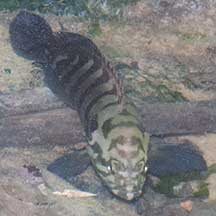
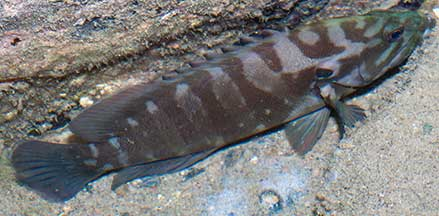
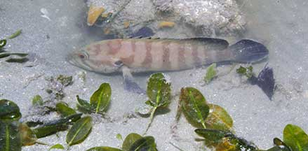
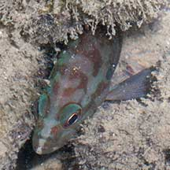
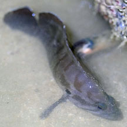
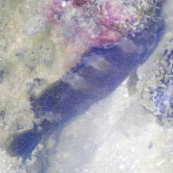
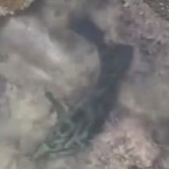
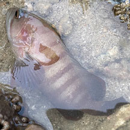

|
|
| fishes text index | photo index |
| Phylum Chordata > Subphylum Vertebrata > fishes > Family Serranidae |
| Chocolate
hind Cephalopholis boenak Family Serranidae updated Oct 2020 Where seen? This rather large fish with chocolate brown bars is sometimes seen on our some of our shores. Surprisingly common near seawalls, also near reefs and rubble, small ones sometimes seen among seagrasses. Elsewhere, this fish is found in silty sheltered waters or reefs, usually alone. Features: To about 20-30cm, but those seen usually about 10-15cm. Brownish to greenish with dusky vertical bands on the body. A dark spot on the upper edge of the gill cover. |
 Tanah Merah, Jun 09 |
 Dark spot on upper edge of gill cover. Tanah Merah, May 10 |
 Small one near seagrasses. Chek Jawa, Jun 03 |
 Hiding among rocks. Sisters Islands, May 08 |
| What does it eat? It hunts mainly
fishes and crustaceans. Human uses: In some places they harvested for eating, particularly when larger groupers have been overfished. |
| Chocolate hind on Singapore shores |
On wildsingapore
flickr
|
| Other sightings on Singapore shores |
 East Coast PCN, Jun 25 Photo shared by Adriane Lee on facebook. |
 Sentosa Serapong, Jul 25 Photo shared of Adriane Lee on facebook. |
 Kusu Island, Jun 24 Photo shared by Tammy Lim on facebook. |
 Terumbu Semakau, May 23 Photo shared by Kelvin Yong on facebook. |
Links
|